📋 本教程须知
本教程仅针对软件本身安装、环境调试、功能配置。使用 Claude Code 需用户自行注册 Anthropic 官方账号、申请合法 API Key。ccswitch 配置的国产 API 也请自行在各平台注册获取 Key。
一、前置环境准备
安装 Claude Code 需要以下前置环境：
- Node.js 18.x LTS 或更高版本
- Git（可选，但推荐安装）
- 终端 / PowerShell（管理员权限）
💡 提示：如未安装 Node.js，请前往 nodejs.org 下载 LTS 版本，安装时勾选"Add to PATH"。
# 验证 Node.js 安装 node --version # 应显示 v18.x.x 或更高 # 验证 npm 安装 npm --version # 应显示 9.x.x 或更高
二、分系统安装
Windows 安装（Win 10 / 11）
注意：建议以管理员身份运行 PowerShell 或 CMD。
- 打开 PowerShell（按
Win + R，输入powershell，右键"以管理员身份运行"） - 执行全局安装命令：
npm install -g @anthropic-ai/claude-code
- 验证安装：
claude --version
如显示版本号则安装成功。若提示"不是内部或外部命令"，请检查 Node.js 是否已添加到 PATH 环境变量。
macOS 安装
支持 Intel 和 Apple Silicon（M1/M2/M3/M4）芯片。
- 打开终端（Terminal.app）
- 确保已安装 Node.js（推荐通过 Homebrew 安装）：
# 安装 Homebrew（如未安装） /bin/bash -c "$(curl -fsSL https://raw.githubusercontent.com/Homebrew/install/HEAD/install.sh)" # 通过 Homebrew 安装 Node.js brew install node # 验证 node --version npm --version
- 安装 Claude Code：
npm install -g @anthropic-ai/claude-code
- 验证：
claude --version
Apple Silicon 注意：Node.js 请务必安装 arm64 版本，不要使用 Rosetta 转译版本。
Linux 安装（Ubuntu / CentOS）
# Ubuntu / Debian sudo apt update && sudo apt install nodejs npm git -y sudo npm install -g @anthropic-ai/claude-code # CentOS / RHEL sudo yum install nodejs npm git -y sudo npm install -g @anthropic-ai/claude-code # 验证 claude --version
三、VS Code 插件安装
- 打开 VS Code，进入扩展面板（
Ctrl+Shift+X/Cmd+Shift+X） - 搜索 Claude Code 并安装
- 安装后按
Ctrl+Shift+P（Mac:Cmd+Shift+P） - 输入
Claude Code: Start启动会话
四、ccswitch 配置国产 API ⭐
ccswitch 是一个命令行工具，可以一键将 Claude Code 的后端模型切换到国产大模型，无需手动设置 ANTHROPIC_BASE_URL 和 ANTHROPIC_API_KEY 环境变量。
安装 ccswitch
或通过 npm 安装：
# 通过 npm 全局安装 npm install -g ccswitch # 验证安装 cc --version
📸 图文步骤：用 ccswitch 配置 DeepSeek API
1
打开下载好的 cc switch
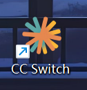
2
选择上面的 Claude Code 终端版
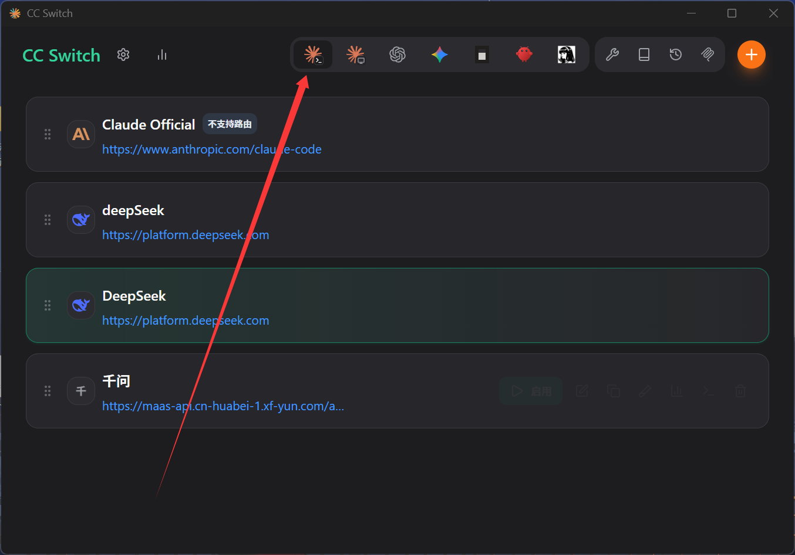
3
新建一个
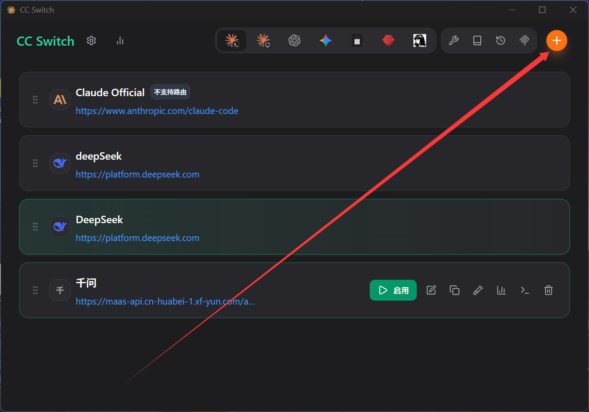
4
选择 DeepSeek
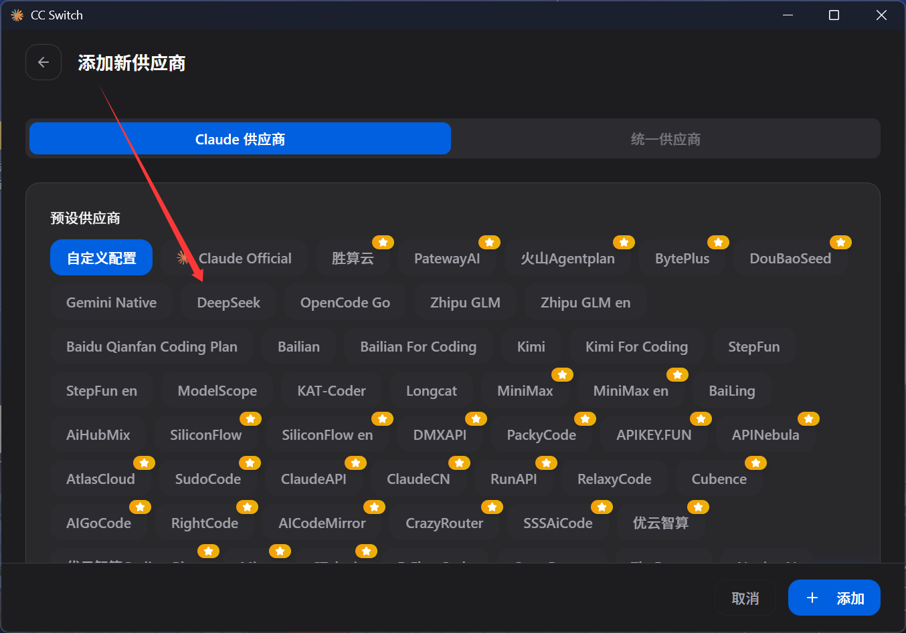
5
去 DeepSeek 官网生成 API
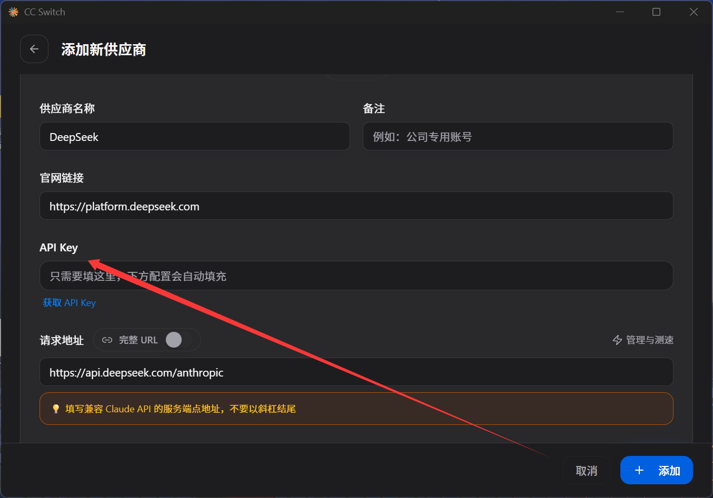
6
打开 DeepSeek 官网
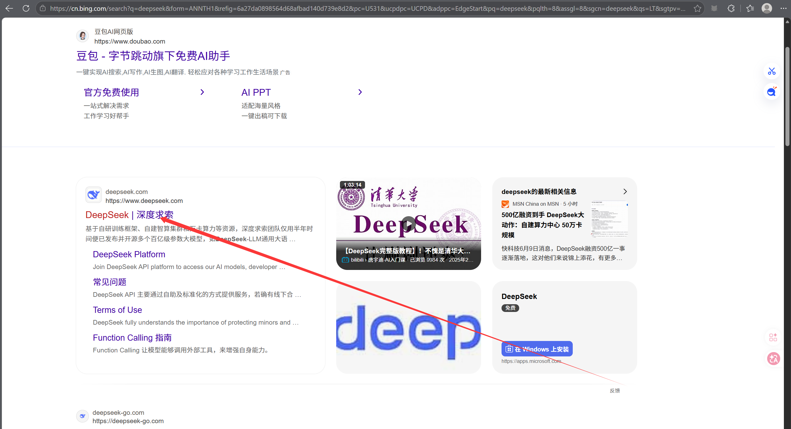
7
选择 API 开放平台
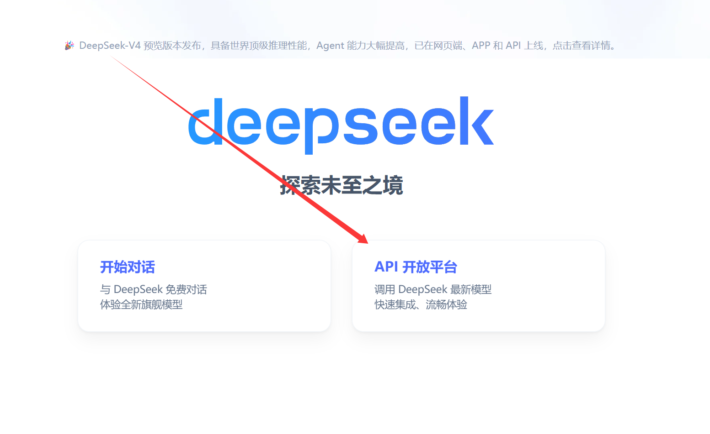
8
随机充几块钱（没钱再充，也不贵）
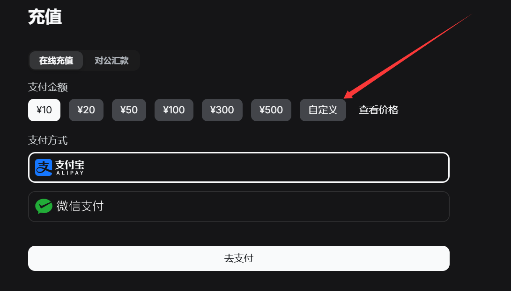
9
点击 API Keys
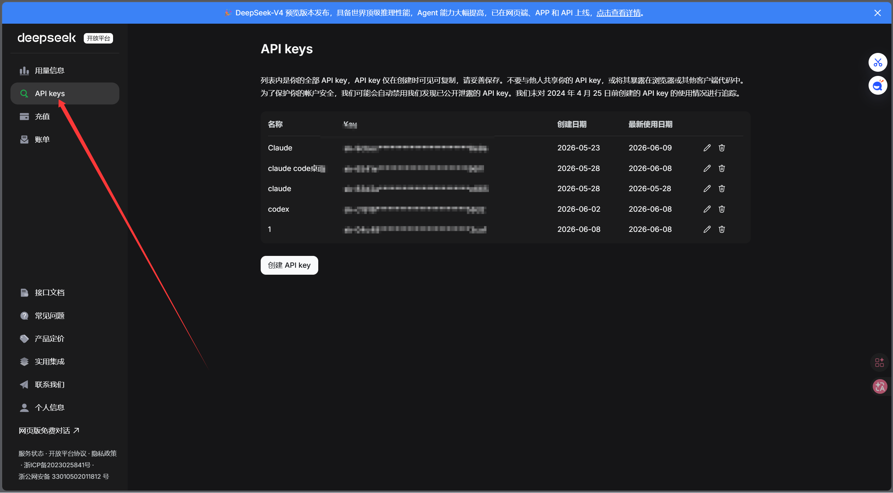
10
创建一个 API
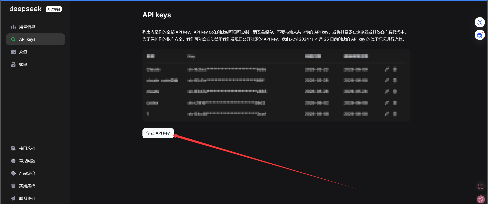
11
复制到 API 填空中，然后划到下面获取模型
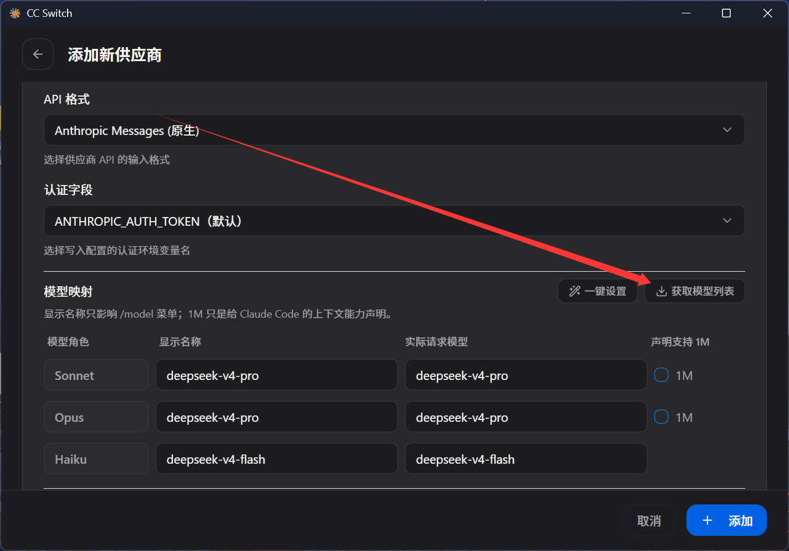
12
会显示获取两个模型，选上 1M
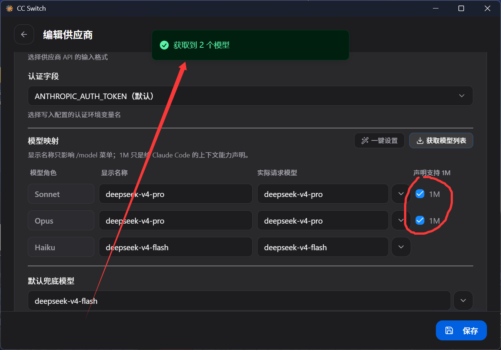
13
保存退出（留在后台）
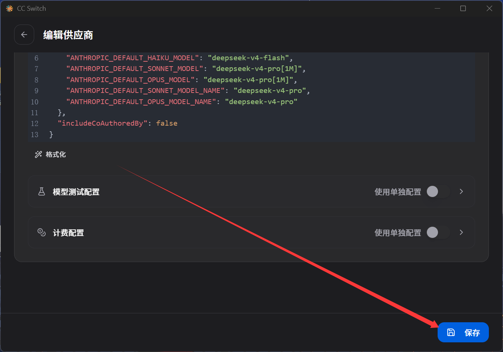
14
使用，测试能否使用
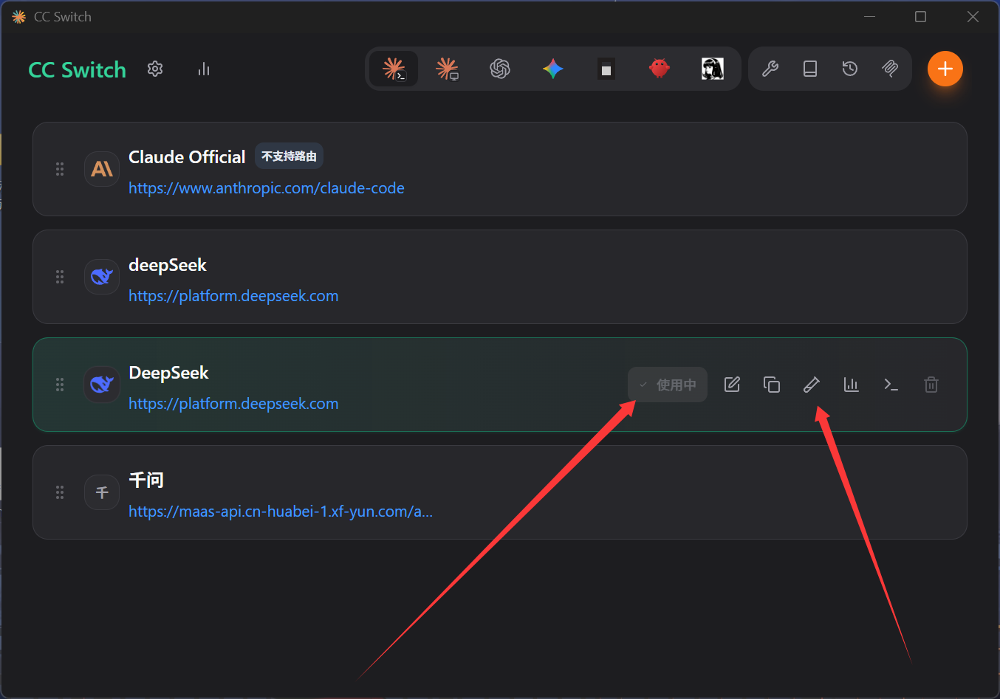
15
DeepSeek 正常运行，代表可以使用
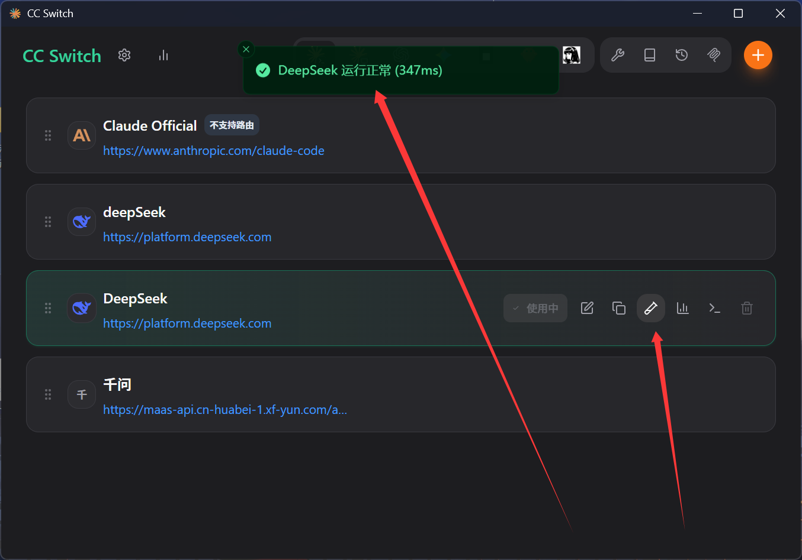
16
打开终端输入 claude
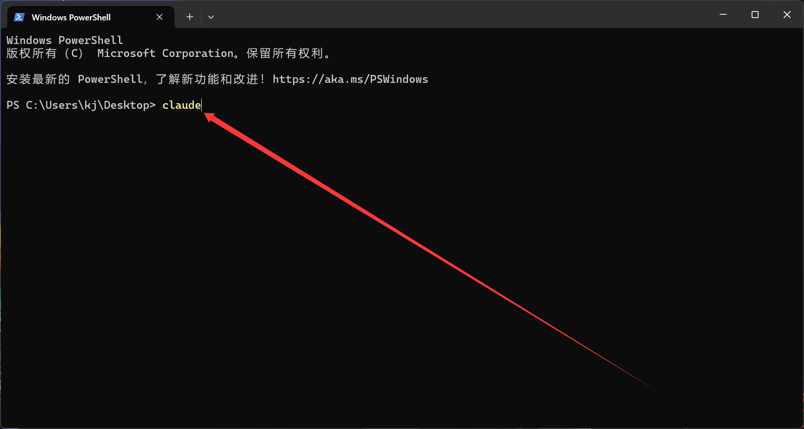
17
完成！Enjoy AI 编程 🎉
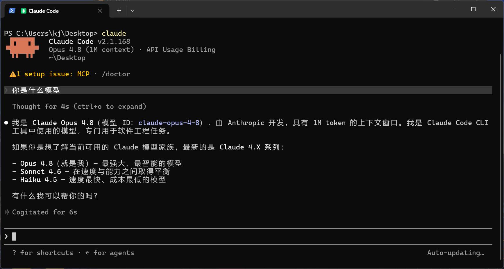
五、常用指令
# 启动交互会话 claude # 直接提问（非交互模式） claude -p "用 Python 写一个快速排序" # 代码审查 /fix # 修复当前文件问题 /review # 审查代码变更 # 代码重构 /refactor 类名 # 查看会话状态 /status /help
遇到问题？查看 FAQ